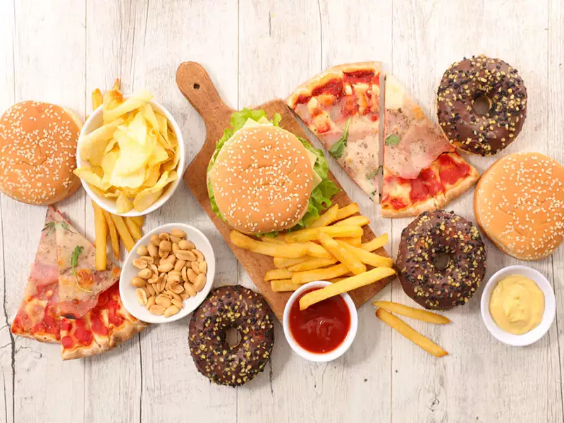

FOOD CHART
There are TWOtypes of food
- Healthy food
- Unhealthy food
Healthy food

A healthy diet is essential for good health and nutrition.
It protects you against many chronic noncommunicable diseases, such as heart disease, diabetes and cancer. Eating a variety of foods and consuming less salt, sugars and saturated and industrially-produced trans-fats, are essential for healthy diet.
A healthy diet comprises a combination of different foods. These include:
- Staples like cereals (wheat, barley, rye, maize or rice) or starchy tubers or roots (potato, yam, taro or cassava).
- Fruit and vegetables.
- Foods from animal sources (meat, fish, eggs and milk).
Here is some useful information, based on WHO recommendations, to follow a healthy diet, and the benefits of doing so.
- Breastfeed babies and young children:
- A healthy diet starts early in life - breastfeeding fosters healthy growth, and may have longer-term health benefits, like reducing the risk of becoming overweight or obese and developing noncommunicable diseases later in life.
- Feeding babies exclusively with breast milk from birth to 6 months of life is important for a healthy diet. It is also important to introduce a variety of safe and nutritious complementary foods at 6 months of age, while continuing to breastfeed until your child is two years old and beyond.
- Eat plenty of vegetables and fruit
- They are important sources of vitamins, minerals, dietary fibre, plant protein and antioxidants.
- People with diets rich in vegetables and fruit have a significantly lower risk of obesity, heart disease, stroke, diabetes and certain types of cancer.
- Eat less fat
- Fats and oils and concentrated sources of energy. Eating too much, particularly the wrong kinds of fat, like saturated and industrially-produced trans-fat, can increase the risk of heart disease and stroke.
- Using unsaturated vegetable oils (olive, soy, sunflower or corn oil) rather than animal fats or oils high in saturated fats (butter, ghee, lard, coconut and palm oil) will help consume healthier fats.
- To avoid unhealthy weight gain, consumption of total fat should not exceed 30% of a person's overall energy intake.
Unhealthy food

Do you know what foods are unhealthy?
The most common unhealthy foods include highly-processed items such as fast foods and snack foods. That’s because highly-processed foods tend to be low in nutrients (vitamins, minerals and antioxidants) and high in empty calories. This is because they contain high levels of unhealthy fats, sodium and sugar.
Examples of processed foods include:
- Chips
- Cookies
- Cakes
- Sugar cereals